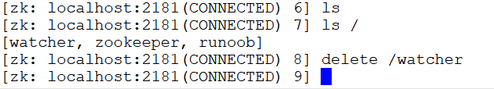
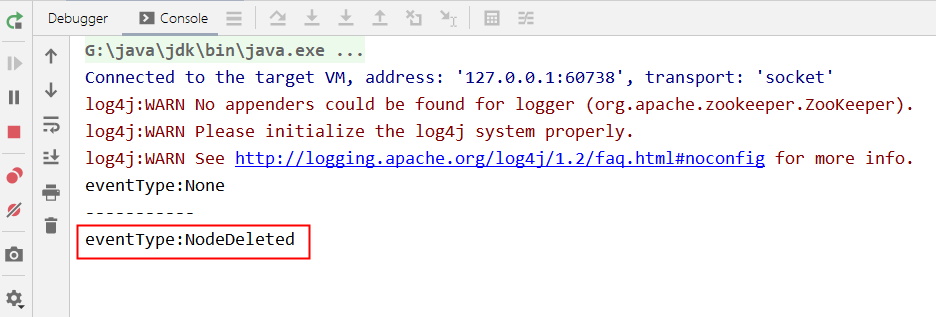
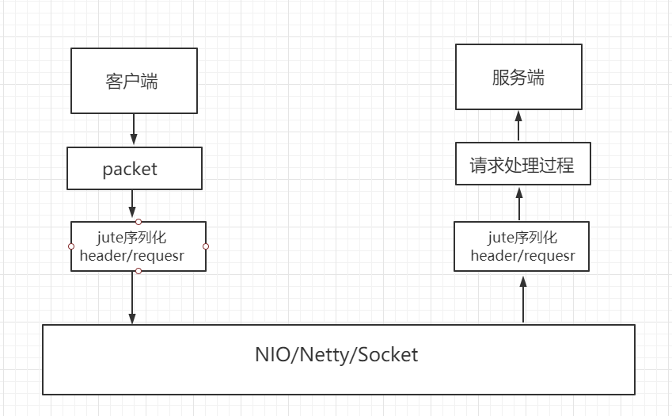
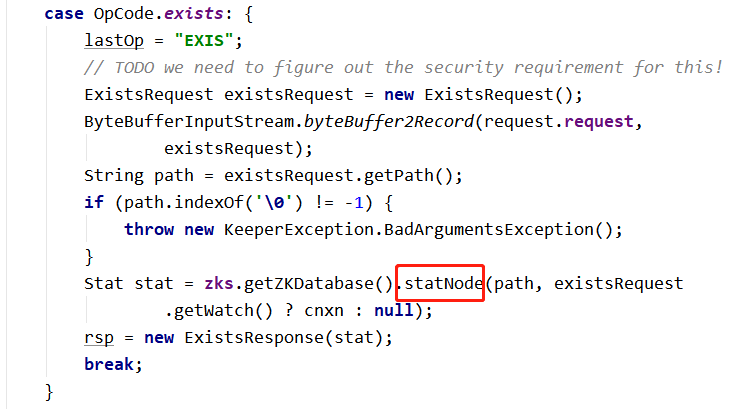
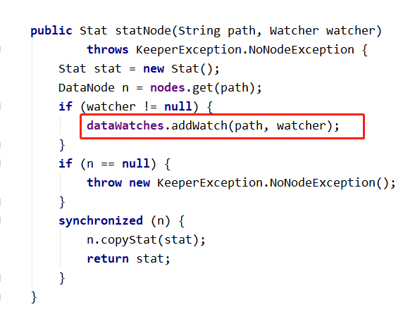
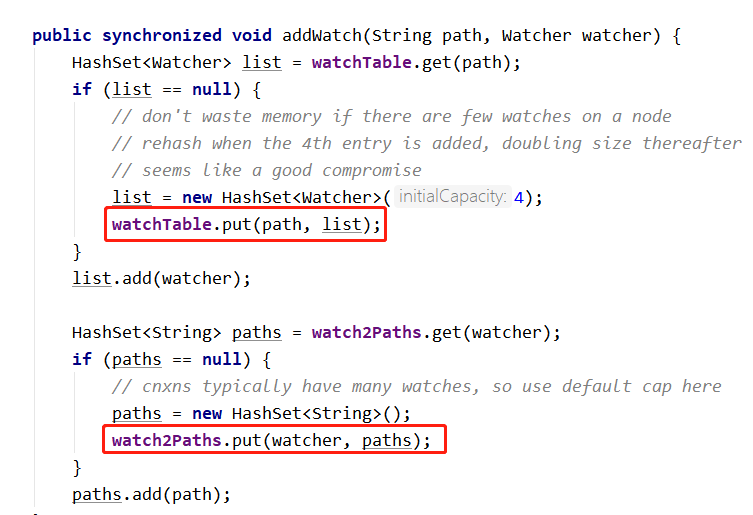
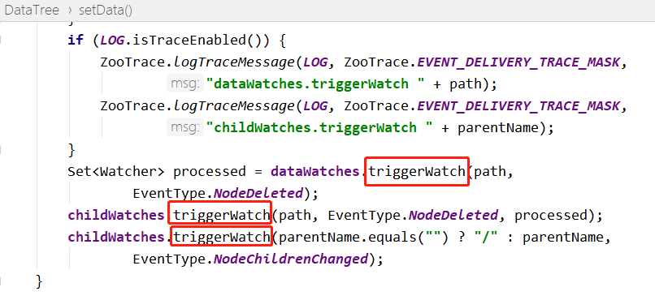
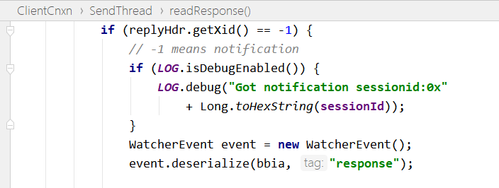

Zookeeper の watcher メカニズムは、4つのプロセスに分けられます：
- クライアントが watcher を登録します。
- サーバー側が watcher を処理します。
- サーバー側が watcher イベントをトリガーします。
- クライアントが watcher をコールバックします。
そのうち、クライアントが watcher を登録するには3つの方法があります。クライアントAPIを呼び出す際、それぞれ getData、exists、getChildren を使用して実現できます。前の章で作成した Maven プロジェクトを利用して、WatcherDemo クラスを新規作成し、exists メソッドを例にその原理を説明します。
例
static ZooKeeper zooKeeper;
static {
try {
zooKeeper = new ZooKeeper("192.168.3.39:2181", 4000,new WatcherDemo());
} catch (IOException e) {
e.printStackTrace();
}
}
@Override
public void process(WatchedEvent event) {
System.out.println("eventType:"+event.getType());
if(event.getType()==Event.EventType.NodeDataChanged){
try {
zooKeeper.exists(event.getPath(),true);
} catch (KeeperException e) {
e.printStackTrace();
} catch (InterruptedException e) {
e.printStackTrace();
}
}
}
public static void main(String[] args) throws IOException, KeeperException, InterruptedException {
String path="/watcher";
if(zooKeeper.exists(path,false)==null) {
zooKeeper.create("/watcher", "0".getBytes(), ZooDefs.Ids.OPEN_ACL_UNSAFE, CreateMode.PERSISTENT);
}
Thread.sleep(1000);
System.out.println("-----------");
//trueはzookeeperインスタンスで設定されたwatcherを使用することを示します
Stat stat=zooKeeper.exists(path,true);
System.in.read();
}
}
プログラムを実行すると、コンソールに表示されます：

このとき、zookeeper のコマンドラインターミナルを起動し、表示して削除しますwatcherノード：

IDE コンソールに出力され、ノード削除イベントがトリガーされました：

クライアントがサーバーにリクエストを送信する際、TCP 長接続でネットワークチャネルを確立します。デフォルトでは Java の NIO 方式を使用しますが、Netty の実装方式に設定することもできます。

watcher 監視イベントの登録フローチャート：

1、クライアントがイベント通知リクエストを送信
Zookeeper クラスで exists メソッドを呼び出すとき、イベントリスナーの作成を request オブジェクトにカプセル化し、watch 属性を true に設定します。サーバーが response を返した後、リスナーイベントをクライアントの ZKWatchManager クラスにカプセル化します。

2、サーバー側が watcher イベントのリクエストを処理
サーバー側の NIOServerCnxn クラスは、クライアントから送信されたリクエストを処理するために使用され、最終的に FinalRequestProcessor を呼び出します。その中に、クライアントから送信された watcher イベントを追加するソースコードがあります：

そして statNode メソッドに入り、DataTree クラスのメソッドで watcher イベントを追加し、WatchManager の watchTable と watchTable に保存します。


3、サーバー側が watcher イベントをトリガーするフロー：
サーバー側で監視されているノードにトランザクションリクエストが発生した場合、サーバーがリクエストを処理する過程で FinalRequestProcessor クラスの processRequest メソッド内のコードを呼び出します。以下の通りです：

削除の呼び出しチェーンは、最終的に DataTree クラスのノード削除ブランチのトリガーコードセグメントに到達します：

WatchManager クラスの triggerWatch メソッドに入ります：

さらに追跡して NIOServerCnxn に入り、xid が -1、zxid が -1 の ReplyHeader オブジェクトを構築し、その後 sendResonpe メソッドを呼び出します。

4、クライアントが watcher イベントをコールバック
クライアントの SendThread クラスの readResponse メソッドは、サーバー側がトリガーしたイベント通知を受信し、xid が -1 のフローに入り、Event イベントを処理します。
